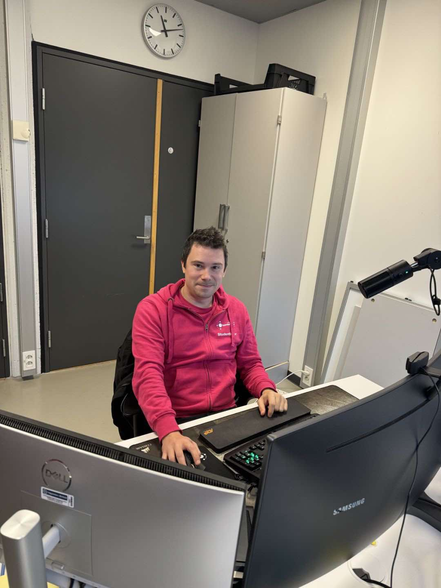

Martins oppvekst i Ski var stille og ensom. Mens andre lo og lekte, var han en observatør – ikke en deltaker.
Han følte seg usynlig.
Oversett.
Utenfor.
Mobbingen var tung å bære, men den vekket noe i ham
Et gnist
Som 12-åring kom redningen i form av en gammel datamaskin, kjøpt på loppemarked av faren. Her startet en reise som skulle forandre alt.
Gjennom koding oppdaget Martin en verden han kunne kontrollere. En verden uten mobbing. En verden der han følte seg
fri
Studentens reise – Hvordan det hele startet
I 2018 flyttet Martin til Halden for å starte på bachelorstudiet i datateknikk ved Høgskolen i Østfold. Dette var mer enn en ny start – det var en mulighet til å bygge en meningsfull fremtid.
Han fullførte bacheloren i 2022, men ønsket å nå lenger. Et masterstudium fulgte, og i 2024 leverte han en oppgave som ble høyt verdsatt av både fagmiljøet og medstudenter.
Utover studiene fant Martin sin plass i studentmiljøet. Han gikk fra å være en ny student til en sentral skikkelse, kjent for sitt arbeid med å styrke fellesskapet og studentenes stemme.
2018
Milepæl: Begynte på bachelor i datateknikk
Rolle/Arrangement: Bachelorstudent ved Høgskolen i Østfold
2022
Milepæl: Fullførte bachelorgrad
Rolle/Arrangement: Bachelor i datateknikk
Milepæl: Begynte på master i IT
Rolle/Arrangement: Masterstudent ved Høgskolen i Østfold
2024
Milepæl: Fullførte mastergrad i IT
Rolle/Arrangement: Mottok A-grad for masteroppgave
Milepæl: Studentleder ved Høgskolen i Østfold
Rolle/Arrangement: Ledet studentdemokratiet og representerte HiØF på nasjonalt nivå
Studentlederrollen – Hva innebærer det å være studentleder?
Martin har et bredt spekter av oppgaver som studentleder ved Høgskolen i Østfold. Han organiserer arrangementer, kjemper for studentenes rettigheter, og fungerer som et bindeledd mellom studentene og administrasjonen.
Gjennom flere vellykkede prosjekter har han bidratt til å skape et inkluderende og sterkt studentmiljø.
"Å være studentleder handler om å gi andre en stemme og sørge for at alle føler seg sett," sier Martin.
Essensielle egenskaper for en studentleder
Lederskap: Evnen til å inspirere, motivere og veilede andre studenter.
Kommunikasjon: Effektiv og tydelig formidling samt evnen til å lytte og samarbeide.
Konflikthåndtering: Evnen til å løse konflikter på en konstruktiv og inkluderende måte.
Organisasjonsevner: Strukturere oppgaver og håndtere tidsfrister for å sikre gjennomføring.
Empati og engasjement: En genuin interesse for studentenes velferd og synspunkter.
En lydklipp fra Martin som forteller hvorfor akkurat han ble valgt som studentleder.
En Dag i Martins Rolle som Studentleder
Martins arbeidsdag er preget av både struktur og fleksibilitet, noe som gjenspeiler hans dedikasjon til studentenes trivsel. Etter å ha balansert studier og studentledelse gjennom flere år, har han utviklet en rutine som lar ham møte utfordringene i rollen med både ro og effektivitet.
Dagen starter tidlig, kl. 07:30, hvor han tar seg tid til å gå gjennom kalenderen, sjekke e-poster og forberede seg mentalt på dagens oppgaver. Dette gir ham en mulighet til å sikre at han er klar for å delta i møter og samarbeide med både studenter og administrasjon.
Fra kl. 09:00 til 14:00, mandag til fredag, fokuserer Martin på en kombinasjon av administrative og sosiale oppgaver. Han deltar i møter med studentorganisasjoner, hjelper studenter med spørsmål eller utfordringer, og arbeider med langsiktige prosjekter for å styrke studentmiljøet.
En av de viktigste aspektene ved Martins arbeidsdag er synlighet. Han er ofte ute på campus, møter studenter ansikt til ansikt og tar seg tid til å diskutere deres bekymringer eller ideer. Han beskriver dette som en av de mest givende delene av jobben.
Fredager tilbringer han ofte i Fredrikstad, hvor han deltar i regionale møter og arbeider med studentdemokratiet. Selv om disse dagene kan være hektiske, ser Martin dem som en viktig mulighet til å nettverke og samarbeide med andre studentledere på tvers av campus. Denne balansen mellom struktur og fleksibilitet lar Martin skape en sterk og inkluderende plattform for studentenes stemmer.
Uventet teknologisk utfordring under et arrangement
Det var en spenningsfylt dag på Høgskolen i Østfold. Martin hadde brukt flere uker på å planlegge et stort seminar som skulle samle studenter fra hele campus. Arrangementet skulle inneholde inspirerende foredrag og en livestream for studenter som ikke kunne delta fysisk. Alt virket perfekt tilrettelagt, men like før starten tok teknologien en dramatisk vending.
Prosjektoren nektet å starte, og lydanlegget var tyst. Klokken tikket, og deltakerne begynte å fylle rommet. I stedet for å la panikken ta overhånd, beholdt Martin roen. Med sitt smittende smil og sin naturlige evne til å lede, samlet han raskt et team av tekniske assistenter og engasjerte studenter for å løse problemet. Samtidig tok han scenen i bruk for å holde publikum engasjert.
Martin improviserte på stående fot. Han startet en spørsmålsrunde der han inviterte studenter til å dele sine tanker om teknologiens uforutsigbarhet. "Er det teknologiens feil, eller er det de som har laget den?" spurte han med et glimt i øyet. En student svarte spøkefullt: "Det er nok både vår og teknologiens feil, men vi skal klare det!" Latter fylte rommet, og stemningen gikk fra anspent til lett og optimistisk.
Til slutt, etter samarbeid og kreativ problemløsning, ble teknologien gjenopprettet, og arrangementet gikk som planlagt. For mange av deltakerne var det ikke bare foredragene som gjorde inntrykk, men også måten Martin håndterte krisen på. Med humor, ro og en evne til å vende utfordringer til muligheter, skapte han en opplevelse som ble husket lenge etterpå.
En lydklipp fra Martin som deler sin refleksjon om hendelsen.
Balansen mellom studier og studentledelse – Hvordan fikk han det til?
Martin Arthur Andersen er ikke fremmed for hektiske dager. Som studentleder for over 7000 studenter ved Høgskolen i Østfold, og samtidig en dedikert masterstudent, krevde det en utrolig disiplin å balansere begge rollene. Men for Martin handlet det aldri bare om tidsstyring; det var en dypere lidenskap som drev ham.
"Studentdemokratiet ga meg et sosialt miljø og en balanse fra det intense arbeidet med masteroppgaven," sier Martin med et smil. For ham var kalenderen mer enn et verktøy – den ble en livline. Hver avtale, hvert møte, og hver oppgave ble nøye planlagt og prioritert for å sikre at han både kunne lykkes faglig og oppfylle sine forpliktelser som leder.
Rutiner var nøkkelen til hans suksess. Martin dedikerte morgentimene til akademiske oppgaver, og ettermiddagene til møter og aktiviteter som studentleder. Ved å holde et stramt, men fleksibelt tidsskjema, klarte han å navigere mellom studier og lederskap uten å ofre kvaliteten på noen av delene. Men det var ikke bare arbeidet som holdt ham motivert – det var menneskene rundt ham.
Gjennom studentdemokratiet fant Martin ikke bare en plattform for endring, men også et støttende fellesskap. Kollegene hans ble en kilde til inspirasjon og energi, og de minnet ham på hvorfor han begynte: å gjøre en forskjell for andre studenter. Hans evne til å kombinere struktur, engasjement og en genuin omsorg for andre er det som har gjort ham til den lederfiguren han er i dag.

Fra dette kontoret styrer Martin arbeidet for ca. 7000 studenter. Hans daglige innsats viser hvordan lidenskap og disiplin kan forenes.
Foto: Ezat Jakob
Kontoret til Martin og steder han har reist som studentleder for å representere Hiøf
Fikk A på masteroppgave
Martins A-oppgave innen bærekraftig teknologi for jordbruk viser hvordan innovasjon kan bidra til det grønne skiftet.
Martins masteroppgave, som fikk karakteren A, fokuserte på en IoT-basert overvåking av jordbærdyrking. Ved å kombinere sensorer og maskinlæringsalgoritmer, utviklet han et system som hjelper bønder med å opprettholde optimale vekstforhold for innendørs jordbær. Oppgaven hans bidrar til bærekraftig landbruk og det grønne skiftet.
Statistikk for ITI52020, 2024 VÅR, Masteroppgave og muntlig eksamen
Hvordan organiserte du arbeidet med oppgaven?
Jeg startet med en grundig planlegging og tidsplan. Jeg delte oppgaven inn i faser, som research, utvikling av systemet, testing og analyse.
Det hjalp meg å holde fokus og prioritere, slik at jeg kunne nå delmålene uten å miste oversikten
Var det noen utfordringer underveis, og hvordan løste du dem?
En av de største utfordringene var å håndtere store datamengder fra sensorene og få algoritmene til å tolke dem på en effektiv måte.
Jeg jobbet mye med datarensing og optimalisering, slik at systemet ble mer presist og mindre ressurskrevend
Hvor mye tid brukte du totalt på masteroppgaven?
Jeg brukte omtrent seks måneder på selve oppgaven, fra idéfasen til innlevering. Dette inkluderte alt fra research, utvikling, testing, og skriving. I gjennomsnitt jobbet jeg 20–30 timer per uke, men i de siste ukene før innlevering brukte jeg gjerne over 40 timer i uka for å få alt på plass
Daglig Rutine
07:00
Våkner opp og spiser frokost
08:00
Drar på forelesning/skole
17:00
Kommer fra skole, spiser mat og slapper av
21:00
Jobber mer med skole før han legger seg
Fremtiden – Hva nå for Martin?
Martins reise har vært alt annet enn enkel. Fra en stille barndom til å bli en stemme for andre, står han nå ved et veiskille.
Hva blir det neste?
Når vi spør Martin om hva fremtiden bringer, svarer han med et smil – men også med alvor. Han vet at suksess krever planlegging, men også vilje til å ta risiko.
Hva er neste steg?
"Jeg vil bygge videre på alt jeg har lært," sier Martin. "Teknologi og ledelse har alltid vært min lidenskap, og jeg ser for meg en rolle der jeg kan kombinere disse interessene for å skape noe som virkelig betyr noe."
For Martin handler det om mer enn ambisjoner. Det handler om
innflytelse.
Han ønsker å gjøre en forskjell, ikke bare for seg selv, men for kommende generasjoner av studenter og samfunnsbyggere. "Studentdemokratiet har vist meg hvor mye kraft som ligger i samarbeid, og jeg vil bruke den kraften til å gjøre utdanning bedre for alle."
Har han noen råd til andre?
"Ikke vær redd for å feile," sier Martin bestemt. "Det er i feilene vi lærer mest. Og husk, ingen kan forandre verden alene. Samarbeid, lytt, og vær modig nok til å ta sjanser."
Fremtiden tilhører de som tør.
Martins historie minner oss om at selv de mest usynlige kan skinne når de finner sin lidenskap og retning. Veien videre er kanskje ukjent, men én ting er klart: Martin er klar for å fortsette å inspirere.